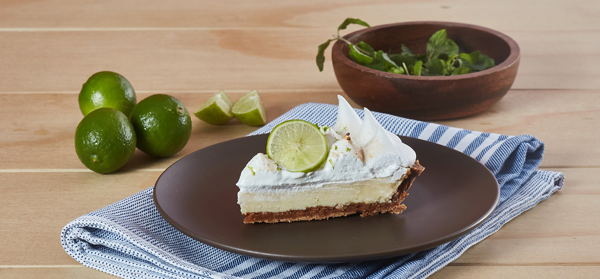

Receta de cocina
Pay de limón
Ingredidentes
- 30 Galletas marías molidas.
- 1 Barra de mantequilla fundida (90g).
- 1 Lata de Leche Condensada LA LECHERA.
- 1 Lata de Leche Evaporada CARNATION.
- 1/4 De taza de jugo de limón colado.
-
¡A cocinar!
- MEZCLAR
- Para la base, mezcla las galletas con la mantequilla hasta formar una pasta, coloca en un molde para
pay, cubre la base y los bordes con la pasta de galleta y refrigera durante 10 minutos.
- LICUAR
- Para el relleno, licúa la Leche Condensada LA LECHERA® con la Leche Evaporada CARNATION® CLAVEL® y
agrega poco a poco el jugo de limón.
- VERTER
- Vierte sobre la base de galleta y refrigera hasta que cuaje por completo; decora con ralladura de limón
y ofrece.
